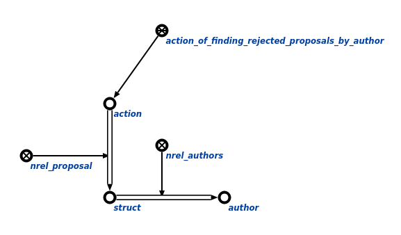

Команда пользовательского интерфейса для поиска всех нерассмотренных предложений разработчика с заданным контекстом предназначена для поиска всех нерассмотренных предложений в рамках контекста, который ограничивает область поиска агента. Первым аргументом команды является пользователь, для которого необходимо найти все нерассмотренные предложения. Вторым агрументом является контекст в рамках которого осуществляется поиск Результатом выполнения команды является вывод на экран всех нерассмотренных предложений разработчика в рамках контекста
